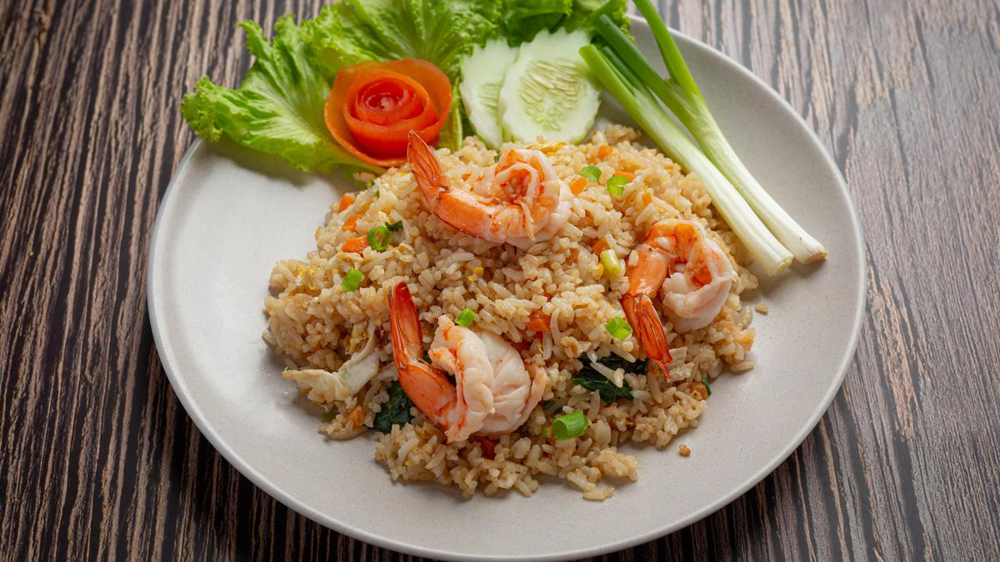

Nasi Goreng
Bahan-Bahan:
- 500 gram nasi putih
- 150 gram udang tampa kulit
- 1 buah daun bawang, iris tipis
- 2 buah Telur, kocok lepas
- dua sdm Kecap manis
- 1 sdt Garam
- 2 siung bawang putih (dihaluskan)
- 6 butir bawang merah (dihaluskan)
- 3 buah cabai merah keriting (dihaluskan)
- 3 sdm minyak goreng untuk menumis
Langkah-langkah:
- Panaskan minyak. Tumis bumbu tumbuk kasar sampai harum. Sisihkan di pinggir wajan. Masukkan telur. Aduk sampai berbutir.
- Tambahkan ayam, udang, bakso. Aduk rata. Tambahkan nasi putih. Aduk- aduk. Masukkan KECAP MANIS BANGO, garam, dan gula pasir. Aduk sampai matang.
- Masukkan daun bawang. Aduk rata. Sajikan bersama telur ceplok dan taburan bawang merah goreng..